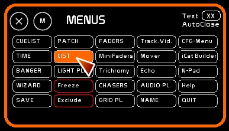
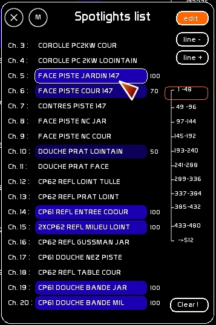
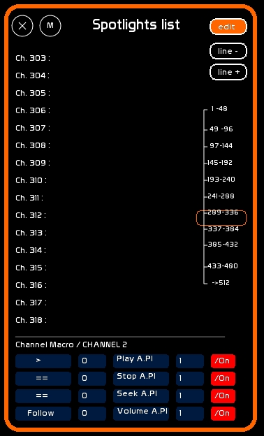
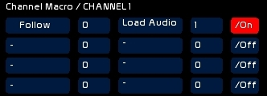

Table des matières
Fenêtre LIST
Descriptif des circuits
Pour afficher la fenêtre LIST
- Clicker le bouton [LIST]

La fenêtre LIST permet de donner un nom, un descriptif, à chacun des circuits, et d'avoir un aperçu nominatif de qui est allumé sur le plateau..

Un ascenceur et des boutons Line + / line - permettent de se déplacer dans les 512 circuits.
Les circuits sont colorés fonction que le niveau le plus haut provient:
- du séquentiel (couleur bleue)
- des Faders (couleur orange)
Le niveau est affiché à droite du descriptif, permettant une lecture rapide de votre état lumineux.
De façon à ce que les opérations d'édition soient possibles:
- Enclencher [EDIT] de la fenêtre LIST
Donner un nom à un circuit
- Appeler la fenêtre NAME, en clickant [NAME] ou en tapant [F5]
- Taper le descriptif mémoire
- Survoler à la souris la zône descriptif du circuit qui vous intéresse
- clicker pour charger le texte dedans
Effacer un descriptif de circuit
- Même opération, mais ne pas taper de texte. Effacer le texte, c'est rentrer un descriptif vide.
Channel Macros
version 0.8.2.7
Il est possible d'encoder des macros déclencheuses d'évènements pour chaque circuit.
Cette édition des macros se fait dans la fenêtre [LIST].
Les macros ont essentiellement deux buts:
- permettre l'enregistrement de la gestion audio directement dans le séquenciel, sans passer par Banger
- permettre le déclenchement d'évènements fonction d'une condition
Ces macros sont déclenchées par des conditions qui se basent sur l'intensité du circuit. C'est la valeur la plus haute qui est prise en compte entre les valeurs issues du buffer des faders et celles issues du séquenciel.
Ainsi les macros peuvent être approchées par les mémoires, ou encore manipulées manuellement via un fader, ou encore via les chasers ou le tracking vidéo.
WhiteCat vérifie le niveau des circuits, si le niveau d'un circuit change, qu'une macro est active, et que la condition de cete macro est remplie, cette macro sera éxécutée.
Editer une macro
Il faut que LIST soit en mode EDIT.
Le dernier circuit sélectionné est celui que l'on édite.

Il y a 4 macros possibles par circuit.
Chaque macro est ainsi présentée:
| Condition | Val 1 | Action | Val 2 | ON/OFF de la macro |
Condition, Action et On/Off s'éditent d'un click souris.
Val 1 et Val2: taper la valeur, clicker la case val 1 ou val 2.
Condition
Chaque macro est composée d'une condition:
| >= | Supérieur ou égal à | Val 1 |
| > | Supérieur à | Val 1 |
| == | Strictement égal à | Val 1 |
| != | Différent de | Val 1 |
| ⇐ | Inférieur ou égal à | Val 1 |
| < | Inférieur à | Val 1 |
Cas particulier, qui n'est pas à proprement parler une condition mais un instruction:
| Follow |
Dans la plus part des cas, Val 1 ne sert à rien. Il sert lors de la recopie de l'intensité d'un circuit sur un autre circuit (catégories Ch>FaderNum et Ch>Stage). Dans ce cas, Val 1 est un numéro de circuit.
Val 1
A part Follow, Val 1 est donc la valeur du circuit définissant la condition.
Action
Il y a plusieurs actions, certaines ne sont exécutées que pour certaines conditions:
| Bang Banger | Toutes conditions y compris Follow | Déclenche le banger Val 2 |
| Load Audio | Uniquement en Follow | Charge le numéro de fichier donné par la valeur du circuit dans le player audio Val 2 |
| Play A.Pl | Toutes conditions y compris Follow | Déclenche le play du lecteur audio Val 2 |
| Stop A.Pl | Toutes conditions y compris Follow | Stoppe le lecteur audio Val 2 |
| Seek A.Pl | Toutes conditions y compris Follow | Rembobine le lecteur audio Val 2 |
| Loop ON A.Pl | Toutes conditions y compris Follow | Enclenche le mode loop du lecteur audio Val 2 |
| Loop OFF A.Pl | Toutes conditions y compris Follow | Stoppe le mode loop du lecteur audio Val 2 |
| Volume A.Pl | Uniquement en Follow | Pilote le niveau du lecteur audio Val 2 |
| Pan A.Pl | Uniquement en Follow | Pilote le pan du lecteur audio Val 2 |
| Pitch A.Pl | Uniquement en Follow | Pilote le pitch du lecteur audio Val 2 |
| Midi CH15 CC | Toutes conditions y compris Follow | Permet d'émettre un signal midi Ctrl Change, Channel 15 , Pitch Val 2 |
| Midi CH15 Key-On | Toutes conditions y compris Follow | Permet d'émettre un signal midi Key On, Channel 15 , Pitch Val 2 |
| Midi CH15 Key-Off | Toutes conditions y compris Follow | Permet d'émettre un signal midi Key-Off, Channel 15 , Pitch Val 2 |
| Fader Level | Uniquement en Follow | Pilote le niveau du fader Val 2 |
| Fader LFOSPeed | Uniquement en Follow | Pilote la vitesse des LFO du fader Val 2 |
| Ch>FaderNum | Uniquement en Follow | Recopie l'intensité du circuit de macro dans le circuit Val1, dans le dock utilisé par le fader Val 2 |
| Ch>Stage | Uniquement en Follow | Recopie l'intensité du circuit de macro dans le circuit Val1, multiplié par le ration en % de Val 2 |
Noter que grâce au midi, en utilisant MidiYoke comme entrée / sortie midi, vous pouvez réémettre dans WhiteCat et ainsi manipuler toutes les fonctions assignables en midi.
Exemple concret: lecteur audio sur deux circuits
Circuit 1:
- choisit le numéro de fichier audio et l'affecte au Player audio 1 ( en follow)

Circuit 2:
- si le circuit 2 est supérieur à 0, lance le play du lecteur audio 1
- si le circuit 2 est égal à 0, stoppe et rembobine le lecteur audio 1
- le niveau du circuit 2 pilote le volume du lecteur audio 1